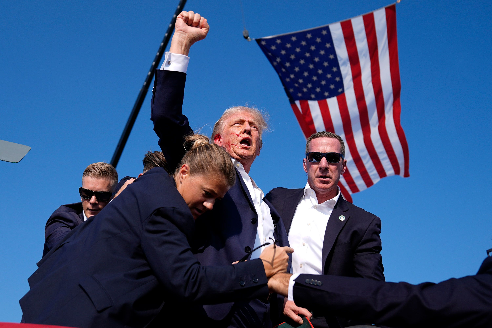

这样一个总统，在被枪击之后没有吓傻，不忘穿上鞋再走，走之前还要停下来，三次振臂高呼：“Fight! Fight! Fight!",所表现出来的勇气，跟拜登天壤之别。本来就是高分，现在又一下子加分这么多，相当于保送下届总统了。
问了一下Kimi：请按时间顺序，详细列举trump在第一任总统期间的各项大事
唐纳德·特朗普（Donald Trump）在2017年至2021年的第一任期内，发生了许多具有重大影响的事件。以下是按时间顺序排列的一些重要事件列表：
2017年1月20日 - 特朗普宣誓就职，成为美国第45任总统。
2017年1月23日 - 签署行政命令，美国退出跨太平洋伙伴关系协定（TPP）。
2017年1月27日 - 发布“穆斯林旅行禁令”，禁止来自七个主要穆斯林国家的公民入境美国。
2017年3月 - 提出“美国医疗保健法案”（American Health Care Act），旨在取代“奥巴马医保”，但未能在国会通过。
2017年4月 - 下令对叙利亚政府军目标进行导弹袭击，回应叙利亚化学武器袭击事件。
2017年12月 - 签署《减税和就业法案》（Tax Cuts and Jobs Act），实施大规模税改。
2018年5月 - 宣布美国退出伊朗核协议（JCPOA）并重新对伊朗实施制裁。
2018年6月 - 在新加坡与朝鲜领导人金正恩举行首次会晤。
2018年7月 - 与欧盟领导人就贸易问题发生冲突，随后达成一定的贸易协议。
2018年10月 - 股市大幅波动，特朗普批评美联储的加息政策。
2018年11月 - 中期选举中，民主党赢得众议院多数席位，共和党保持参议院多数。
2019年1月 - 宣布美国进入国家紧急状态，以绕过国会获得边境墙资金。
2019年2月 - 特朗普与国会就边境墙资金问题发生争执，导致美国政府部分关闭35天。
2019年6月 - 特朗普在朝韩非军事区与金正恩举行短暂会晤。
2019年10月 - 宣布从叙利亚北部撤军，引发国内外的广泛批评。
2019年12月 - 特朗普被众议院弹劾，理由是滥用职权和妨碍国会调查。
2020年2月 - 参议院宣告特朗普在弹劾审判中无罪。
2020年新冠疫情 - 特朗普政府的疫情应对措施受到广泛批评。
2020年5月 - 在明尼阿波利斯警察暴力执法导致乔治·弗洛伊德死亡后，美国多地爆发大规模抗议。
2020年11月3日 - 举行总统选举，特朗普败选。
2021年1月6日 - 特朗普的支持者冲击美国国会大厦，试图阻止国会认证选举结果。
2021年1月20日 - 特朗普离任，乔·拜登宣誓就职成为美国总统。
这些事件仅是特朗普任期内的一小部分，他的政策和行为在国内外都引起了广泛的争议和讨论。
看起来Trump有几个特点：
- 以美国为中心，喜欢退群，不在意盟友感受
- 喜欢出风头，比如跟金正恩的会谈
- 不喜欢在打仗上耗着，比如从叙利亚撤军
- 可能是因为地产商出身，不喜欢高利率,不喜欢高的企业所得税
我的推测：
- Trump大概率再次上台，商人出身，没有政治背景，两次当选总统，可以说空前绝后。
- Trump上台后，对中国不会更好，但是中国的压力会有很大的缓解，因为：Trump不喜欢美国的盟友，认为盟友占美国便宜。美国的盟友们，包括加拿大、澳大利亚、英国、日本、韩国、一众欧洲国家，因乌克兰而跟俄罗斯仇恨很深，现在因为巴勒斯坦而跟中东也关系不好，那么，当以后跟美国关系也不好的时候，唯一的选择就是跟中国缓和关系。所以那时候，中国会有喘气的机会。
- Trump大概率后面还会有被刺杀的可能，同时，上台之后大概率还会被弹劾。
- Trump上台后（其实是无论谁上台），美国国内冲突会继续恶化，有生之年看到美国分裂，也有相当的概率。
- Trump上台后大概率会降低企业所得税，这会倒逼中国降低企业税赋。
- 长远来看，中美关系是逐渐恶化的趋势是确定的，我们这代人，有生之年应该会看到中美的热战–代理人战争，或者直接冲突。
2024.09.16 补充：
据说现在哈里斯风头很盛，但是我仍然看好Trump。我们现在看到的，是美国媒体控制的消息，而美国媒体是比较偏向民主党的，最后鹿死谁手还不一定。
另外，这两天新闻，Trump可能遭遇了刺杀，安全人员枪击了一名距离Trump 500米之内的持械分子。